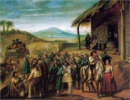
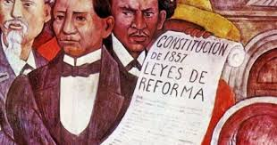
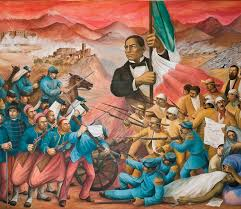

Benito Juárez (1806-1872), nacido en Oaxaca, México, fue un estadista y líder indígena fundamental en la historia de México. De ascendencia zapoteca, superó la pobreza para estudiar derecho, convirtiéndose en abogado y político destacado.
Durante la Reforma Mexicana, desafió el poder eclesiástico y conservador, contribuyendo a la redacción de la Constitución de 1857 que estableció la separación entre Iglesia y Estado.
Durante la intervención francesa, asumió la presidencia y lideró la resistencia, restaurando la república en 1867. Su lema «El respeto al derecho ajeno es la paz» refleja su compromiso con la legalidad y la soberanía. Benito Juárez, el primer presidente indígena de México, dejó un legado duradero de reformas y defensa de los principios democráticos.
